Problem
This example calculates the potential throughout the system shown in Figure 1 below, using SIMION's Poisson solver.
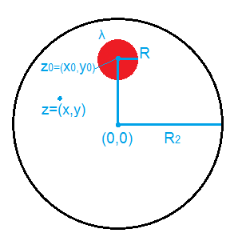
Using this Example
- On the main SIMION screen, click
Run Lua programand select "solve.lua". This will build the PA, refine it, and do some analysis. On completion,- pipe.pa is the refined PA. You can plot PE and contours in the View screen (e.g. Figure 2 below).
- pipe-charge.pa contains the space-charge. You don't normally need this; it was only needed when pipe.pa was refined.
- pipe-theo.pa contains theoretically computed potentials (without using Refine), just for comparison.
- pipe-diff.pa - contains the difference in potentials between pipe.pa and pipe-theo.pa. It can be useful to plot PE and contours of this PA to observe where the two differ.
- The Log window shows some summary statistics, such as the maximum difference in potential between computed and theoretical potentials. Note that decreasing the Refine "convergence" variable in "solve.lua" or increasing the grid density will improve this but require more computation time.
- Examine the solve.lua program in a text editor to see how this works. Note that it in turn calls functions in a "palib.lua" library located in the parent folder. This in turn calls functions in the SIMION 8.1 Lua PA API [3].
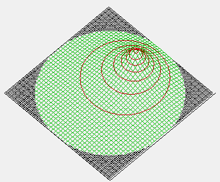
Theoretical Equations
This example happens to have an analytical solution, which is derived briefly here for comparison.
First, consider the simpler case where cylinder R2 is omitted and z0 is at the origin. That is, there is only an infinitely long cylinder of charge, of radius R, uniformly filled with charge per unit length λ. Let r = |z| be the distance from the cylinder axis (origin) to a point z. The electric field E and potential
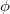
at point z, if z is outside the cylinder (|z| >= R), is given by Gauss' law as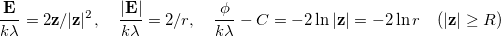
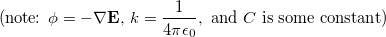
More conveniently, we'll re-express that in the equivalent complex number notation:
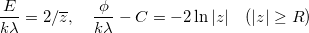
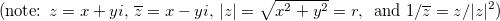
More generally, it can likewise be shown by Gauss' law that this same equation holds regardless
how the charge inside the cylinder  is distributed, as long as the
charge density depends only on |z|. For example, if cylinder R is replaced by a conductor,
the charge density is constant on the surface |z|=R and zero everywhere else.
Notice also that the above equation is independent of R in the region
is distributed, as long as the
charge density depends only on |z|. For example, if cylinder R is replaced by a conductor,
the charge density is constant on the surface |z|=R and zero everywhere else.
Notice also that the above equation is independent of R in the region
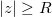
. For more details, see [1].Now, the field inside the cylinder (
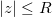
), assuming uniform charge density inside the cylinder, is given by Gauss' law as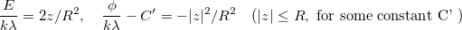
If this cylinder of charge is placed inside a larger conductive cylinder of radius R2, and both cylinders are axially aligned, the field in the region
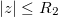
remains the same as before by the symmetry of the problem and Gauss' law. If we also set the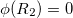
, then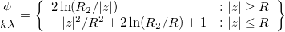
If the two cylinders are not axially aligned, then we proceed as follows. First consider when the charged cylinder is replaced with a line charge on the axis, which we've seen generates the same field as before outside |z| > R. Consider also that this charge is shifted off-axis to the location z0, so the field is
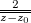
outside of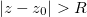
R\)" style="vertical-align:text-bottom" />.By the method of images for cylindrical systems, the corresponding image charge would be a polar opposite line charge at location
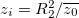
, so the overall field is of these two line charges is their sum: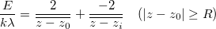
Inside the smaller cylinder (
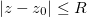
), the first term above is multiplied by the fractional area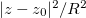
when applying Gauss' law, giving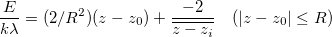
The potentials, on applying boundary conditions (
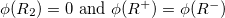
) are therefore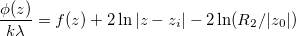
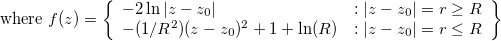
Note: in the limit
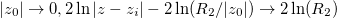
.For additional discussion, including even more general cases where the circle cross-section is replaced with an elliptical charge distribution, see [2].
References
- See also the other Example: Poisson.
- [1] HyperPhysics: Electric Field / Cylinder. http://hyperphysics.phy-astr.gsu.edu/hbase/electric/elecyl.html
- [2] Electric field of a 2D elliptical charge distribution inside a cylindrical conductor. M. A. Furman. Center for Beam Physics, Lawrence Berkeley National Laboratory. 2007. [link]
- [3] SIMION 8.1 Lua PA API (simion.pas).
Source
D.Manura, 2011-12